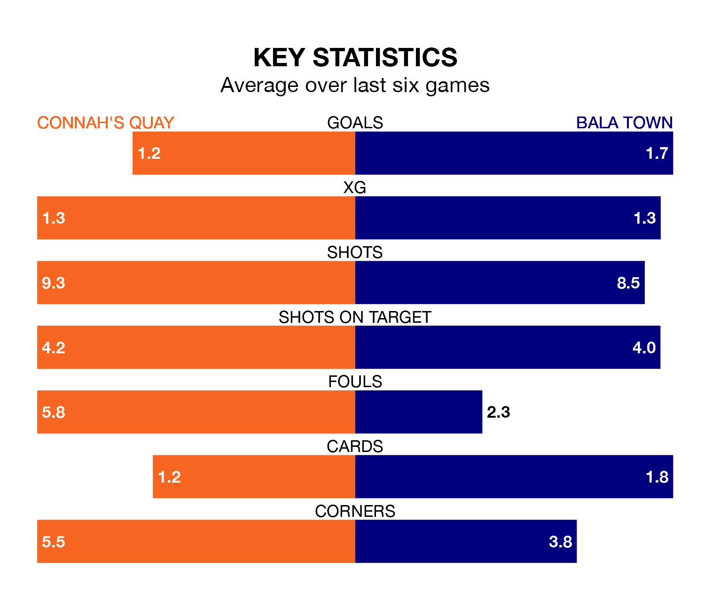

Connah's Quay host Bala Town in Friday's late match at the Essity Stadium looking to bounce back from defeat last time out in the Welsh Premier League.
The Nomads, who sit second in the league after 30 games, fell to a 0-3 away defeat to Cardiff Met on April 6.
They face a Bala side who also lost their last match, a 4-1 defeat to The New Saints, and who sit third in the table.
With 70 goals in 30 games so far this season, Connah's Quay are the league's second-highest scorers with 2.3 goals per game. And they are conceding fewer than average, letting in 41 goals at a rate of 1.4 per game.
Bala, meanwhile, are below average scorers, with 1.2 goals per game, compared to a league average of 1.5. They have conceded 1.0 goal per game.
In the last 10 years, Connah's Quay and Bala have played each other on 39 occasions. Connah's Quay won 17 of them, Bala 10, and they drew 12 times.
On average, the Nomads scored 1.3 goals and the Lakesiders 0.9 in those matches.
Their last meeting was on March 23, when Connah's Quay won 1-0 at home.
The Nomads are in mixed form in the Welsh Premier League, with two wins and a draw from their last six games.
With three wins and two draws over that period, Town's form is better – they have taken 11 points from 18, compared to the home side's seven.
Updated: 10:01 (UTC), 12/04/24